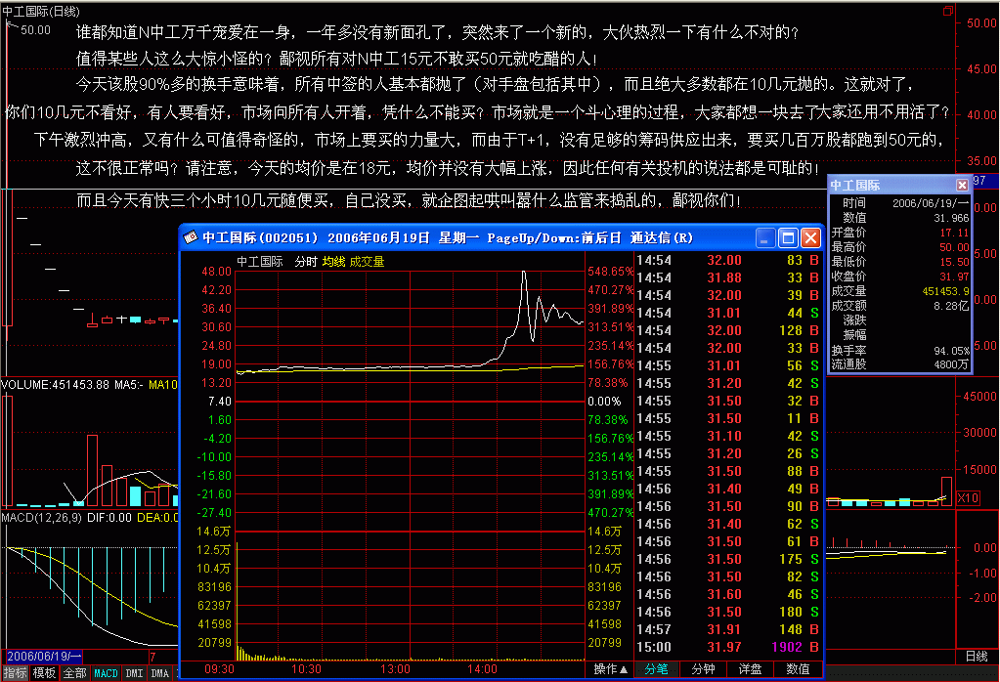
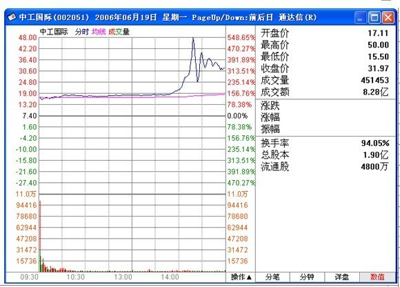

|
 |
教你炒股票4：什么是理性？今早买N中工就是理性！
(2006-06-19 21:41:14)
很奇怪，在资本市场中经常有人在教导别人要理性。而所有理性模式后面，都毫无例外地对应着一套价值系统为依据，企图通过这所谓的依据而战胜市场，就是所有这些依据最大的心理依据，而这，就是所有资本谎言和神话的基础。真正的理性就是要去看破各色各样的理性谎言，理性从来都是人YY出来的皇帝新衣，这在哲学层面已不是什么新鲜的事情。
更可笑的是，被所谓理性毒害的人们，更经常地把理性当成一种文字游戏，当文字货币化以后，这种文字游戏就以一种更无耻的方式展开了。但真正的理性从来都是当下的，从来都是实践的，而实践，从来都是当下的理性。就像性是干出来的而不是说出来的，理性也一样。
站在资本市场的角度，就是所有的介入都是可介入从而被介入地介入着。也就是所有的介入，当你介入时，市场与你就一体了，你创造着市场，从而市场也创造着你，而这种创造都是当下的，从而也是模式化的。真正的理性关心的不是介入的具体模式如何，而是这种模式如何被当下着，最重要的是，这种模式如何死去。
生的，总要死去，如果自然真有什么法则，这就是唯一的法则，市场上的法则也一样。所谓法则，就是宿命。在市场中，死亡是常态，也是必然，而生存，必须以死为依据，所谓生生不息，其实就是死死不息，当你被依据所依据时，其实已在死亡之中。而生死，从来都是被当下所模式，资本市场也一样，以为离了生死也就无生死可了，这不过是所谓理性的妄想。任何市场中人，都是被生死了的，生死无处可离，生死就在呼吸之间，不离生死而从容于生死，没有这种大勇猛，一切的理性都不过垂死的哀鸣。对于市场来说，介入就是介入生死，无所依据地从容于各种模式之间，无所往而生其心，而心实无所往，方可于生死而从容。
对于市场的参与者来说，首要且时刻必须清楚自己目前介入模式的当下，而市场中的绝大多数人，是不知道自己在干什么的，狠一点说，就是死都不知道怎么死就死了，市场基本由这种人构成。这种构成与资金实力无关，大资金死起来更快，一夜之间土崩瓦解的事情，本ID见得多了。此外，如果你一定要很习惯地、理性地追问什么是理性，那么，相对那些光说不干的所谓理性，今早15元多买N中工就是理性！理性是干出来的，今天，你干了吗？


缠中说禅：
2006-11-22
12:25:08
非常欣赏楼主的新思维和大智慧,但有一点不明白,楼主为何说15元多买N中工就是理性?现在我不是想问N中工值不值这个价,我是想知道假如我在那个位置买了,后面的情况大家也知道了,我的问题是在这个长达几个月的过程中应该如何处理才是最佳的操作手法?
==================
开盘就买中工当然是理性的，因为第一只，(注：IPO重新开闸后的第一只股票）而且开盘的位置也不太高。后面之所以出现如此走势，是中国特色的管理层所造成的，但开盘15元多买的，后面18、19元随便你出，由于情况发生了意外，当然就要选择退出，这还是上面的原则，买股票一定不能追高，这样一旦发生意外，退出也简单。
|
|
|
|